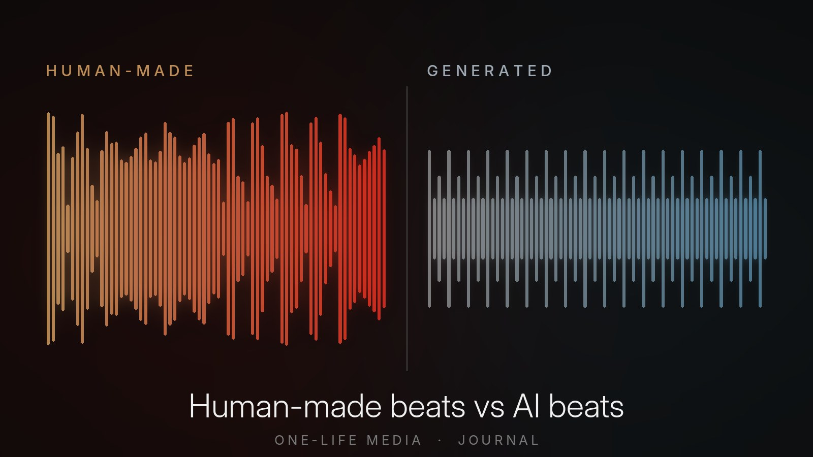

Journal / Beats and licensing
Human-made beats vs AI beats: why artists should still use a producer
By Joseph Wright, One-Life Media and InBlaq Music. 13 November 2026

You can now type a few words into an AI music tool and get a finished instrumental in under a minute. So why would an artist still pay a producer for a beat? Because the beat is the foundation of your song, and what you build on it has to belong to you.
I should say up front that I'm not against AI. At One-Life Media we make music videos with AI tools, and they are brilliant for some jobs. But a music video and a beat are different things. A video promotes a song. A beat becomes part of the song itself, and that changes what's at stake.
1. Can you own a song built on an AI beat?
This is the question most artists don't ask until it's too late.
In January 2025 the US Copyright Office published a report on works made with generative AI. Its conclusions were clear:
- Material generated entirely by AI is not protected by copyright.
- Writing the prompt does not make you the author, because a prompt is treated as an idea and you don't control what the machine produces.
- Choosing your favourite output from a batch is not, on its own, a creative act.
- Human contributions you can actually hear in the finished work, such as your own melody, lyrics or arrangement, can still be protected.
So if your beat came straight out of an AI generator, the instrumental part of your song may belong to no one. In practice, that means you could struggle to stop someone else from copying it, and its value to a label, publisher or sync buyer is weaker.
UK law is different. It has a special rule for "computer-generated works", but the government has been consulting on whether to keep it. The direction of travel in the biggest music markets is the same: protection follows human creativity.
A beat made by a producer is an original work with a named author. When you license it, you know whose work it is, what you're allowed to do with it, and that the copyright behind your song is solid.
2. A licence only means something if someone owns the beat
When you buy a lease from a producer, you get a written licence: who the licensor is, what you can release, how many streams, and how the songwriting splits work. If a distributor, a playlist curator or YouTube ever asks for proof, you have a document with your name on it.
AI music tools give you their terms of service instead. These differ from tool to tool, can change at any time, and often depend on which subscription you had on the day you made the track. Several AI music companies have also faced lawsuits from record labels over the music used to train their models. Even where those disputes are settled, it's an uncertain foundation to put a career on.
3. Streaming services are watching for AI
Streaming platforms haven't banned AI music, but they are tightening the rules around it.
In September 2025 Spotify said it had removed more than 75 million "spammy" tracks in the previous 12 months. It announced a spam filter that stops recommending tracks flagged for mass uploads and other spam tactics. It also said it would show how AI was used in songs, through a new industry standard for AI disclosures in credits. And it confirmed that AI voice clones and impersonations are not allowed.
Distributors are following suit. When we upload a release, our distributor now asks us to declare whether the track is human-created, AI-assisted, partly AI-generated or fully AI-generated. It warns that a wrong declaration can lead to review delays or restrictions.
None of this stops honest use of AI. But a song built on a human-made beat is one less thing to explain, declare or defend when you release it.
4. Your sound should be yours
AI generators learn from what already exists, then give you the statistically likely version of what you asked for. That's useful for a quick idea. But "likely" is the opposite of what makes a record stand out.
A producer makes choices. These include the odd sound in the background that becomes your signature, the drop that lands a bar later than expected, and the bass line written around how you ride a beat. Those decisions are what people mean when they say a song has a sound.
There's a practical risk too. Thousands of people are asking the same tools for the same thing, such as "dark trap beat, 140 BPM". So the chance of your instrumental sounding very close to someone else's is real.
5. A producer can change the beat. An AI output can't
Once you start writing, you'll often want changes. Typical requests are a longer intro, the hook section looped, the drums dropped out for the second verse, or the key moved to suit your voice.
With a human producer you can ask for those changes. With a stems licence you also get every part separately, such as the drums, bass and melodies. That way your engineer can mix your vocals properly instead of fighting a single flattened file.
Some AI tools can split a track into rough stems after the fact, but that isn't the same as having the original parts it was built from.
6. Royalties and credits are clearer
A producer who writes a beat is a co-writer of your song. That sounds like a cost, but it works in your favour. The writer split is agreed in the licence, each of you registers your share with your collection society (PRS for Music in the UK, ASCAP or BMI in the US), and royalties flow to the right people.
With an AI beat, there's no co-writer to register. If the instrumental isn't protected, though, there may also be less of a song to register at all.
Where AI does help
To be fair to the technology, here's where AI can genuinely help artists:
- sketching ideas and reference tracks to show a producer the vibe you want;
- practice tracks for writing sessions;
- visuals, artwork concepts and promotional content;
- admin, such as drafting release plans, pitches and descriptions.
The test I use is simple. If it's going to be part of the song you own and release, it should come from a person. If it helps you make or market the song, AI can be a great tool.
A quick checklist before you license any beat
- Who made it? Is the beat human-made, and is the producer named on the licence?
- What do you get in writing? A licence document with your name, the date, your stream limit and the songwriting split.
- Are there samples? Ask whether the beat uses any samples and whether they're cleared.
- Can you get stems? You'll want them for a proper mix.
- What happens on YouTube? Ask whether the beat is registered with Content ID, and how claims on your videos are handled.
- Can you upgrade? Check whether you can move to a bigger licence if your song takes off.
If you're weighing up a cheaper lease against an exclusive, read our guide on why non-exclusive beats can still lead to success.
Beats from InBlaq Music
Every InBlaq Music beat is made by me in the studio, not generated. Each licence comes with a PDF in your name and a licence number anyone can check online. You download your files straight away, and the terms are written in plain English. Leases start at £30 for the WAV, £75 with full stems, and exclusives start at £300.
Browse the beats or get in touch if you'd like something made for your project.
Sources
- Music Business Worldwide: what the US Copyright Office's January 2025 report says about AI-generated content
- Jenner & Block: US Copyright Office report on works incorporating AI-generated material
- TechCrunch: Spotify updates AI policy to label tracks and cut down on spam (25 September 2025)
- eWeek: Spotify removes 75 million spam tracks